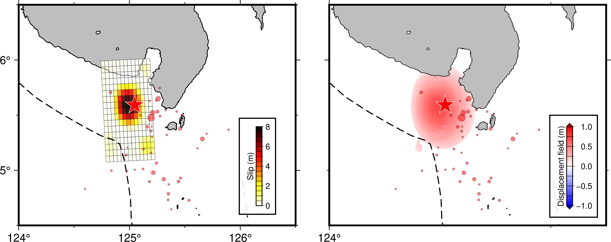
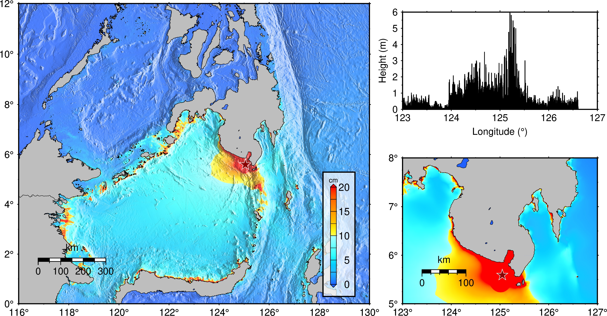

We have simulated the tsunami generated from the earhtquake in the Mindanao region (5.592°N, 125.047°E, depth = 55.2 km, M = 7.8 at 23:37:41 UTC according to USGS) on Jun. 7, 2026. The tsunami source model is computed using the USGS finite fault model (Figure 1).
For the initial tsunami condition, static seafloor deformation is computed for a rectangular fault model (Okada, 1985) using the source models. The bathymetry data used are the 15-arc-second grid data from GEBCO 2025, which were resampled to a 9-arc-second grid. To simulate tsunami propagation, the linear shallow-water (long-wave) equations were solved numerically using a finite-difference method (Adriano et at., 2018)

Figure 2 shows the maximum wave height distribution (tsunami energy) and the maximum tsunami height distribution at the coast.
